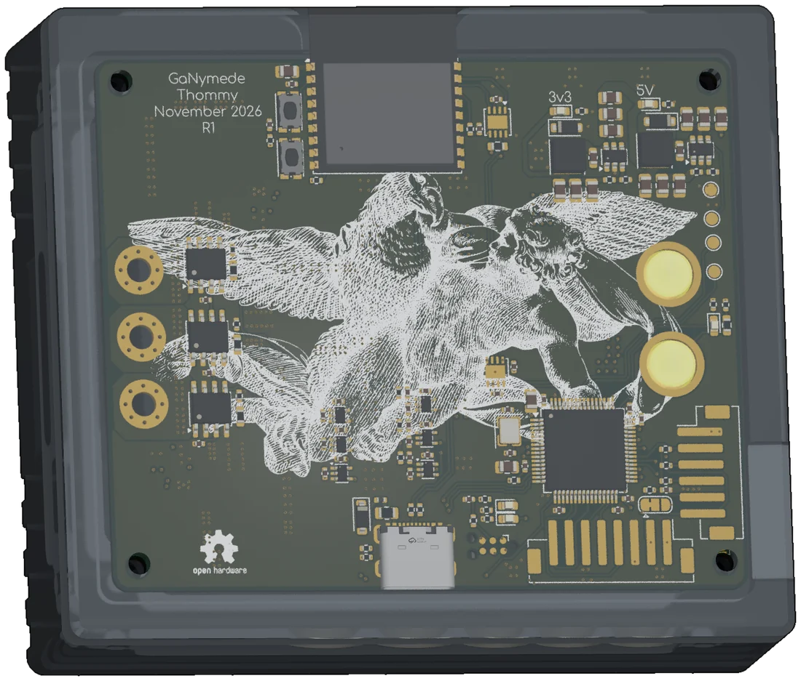
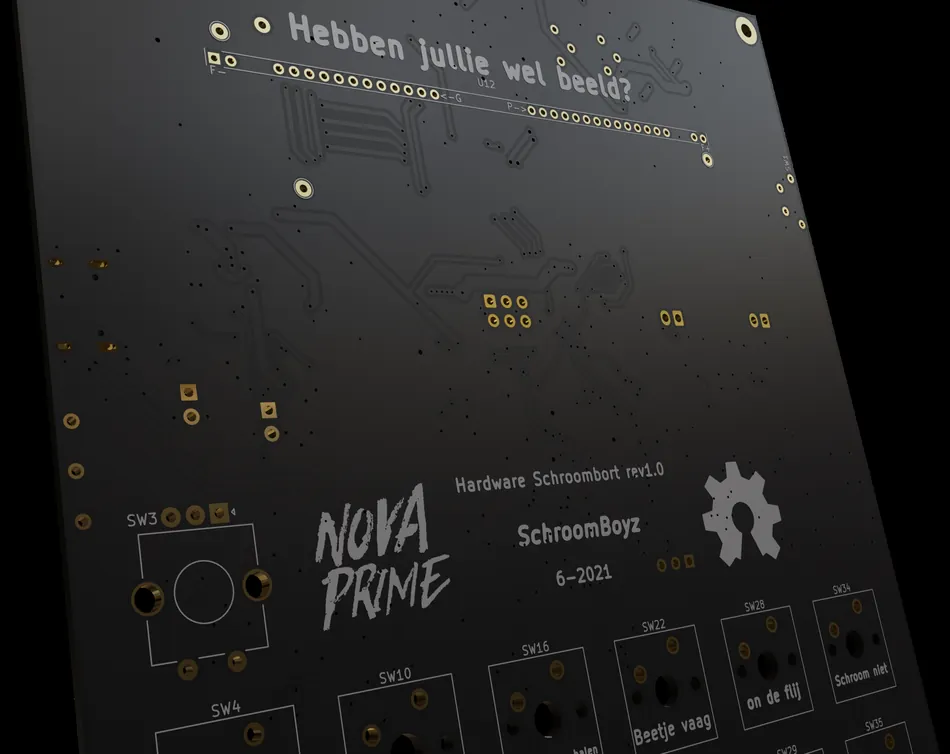

I design GaN and SiC converters, motor drivers and mains hardware, from a 240 W pocket supply to a 10 kW converter module. I do the enclosures and renders as well, because a good board deserves better than a KiCad screenshot.
Open designs2021 — 2026Hardware, enclosures & renders by me

GaNymede R1 · 60 V / 100 A78 × 65 mm · 6-layer
GaN & SiC power stagesPlanar magneticsThermal designCreepage & clearanceSix-layer layoutMains isolationEnclosuresRendersReverse engineeringGaN & SiC power stagesPlanar magneticsThermal designCreepage & clearanceSix-layer layoutMains isolationEnclosuresRendersReverse engineering
A dual active bridge designed for 10 kW as part of a thesis on a 500 kW off-grid EV charger. The TI reference design stopped at 500 V; this one takes 800 V in and goes up to 1000 V out. Revision one also has a few magnet-wire fixes, because of course it does.
A VESC-compatible hub-motor driver built around six EPC2361 GaN FETs and a compact commutation loop. The 78 × 65 mm board targets 50 A continuous and 100 A for one minute, with three-shunt sensing and a loss model that includes the copper as well as the switches.
A USB-C PD 3.2 buck/boost supply designed for 0–60 V and up to 240 W output. Because everything needs USB-C nowadays. Revision two measured 219 W output at 94.8 %; a separate maximum-input test reached 240.8 W at 90.2 %.
Two VESC-compatible motor channels share a 99 × 99 mm board and an internal CAN bus with an ESP32. Now powering my electric skateboard, with traction control and no rotor position sensor at all.
Thirty-six Cherry MX switches, a vacuum fluorescent display, stereo speakers and a battery. It started as a soundboard, then gained a macro-pad mode and calculator. The scope creep was entirely self-inflicted.
01Power conversionBuck/boost converters, dual active bridges, CCM boost PFC and three-phase inverters. Some switch at 100 kHz through a planar transformer; others run GaN at 1 MHz. The topology comes from the voltage range, loss budget and parts that can actually be bought.
02Wide-bandgap power stagesEPC GaN and 1700 V Microchip SiC selection, gate drive, dead time and snubbers. Loss models use datasheet curves for more than RDS(on): gate charge, switching losses and operating conditions all matter.
03MagneticsPlanar transformer ratios and leakage targets, inductor saturation and core loss, and the heat that follows. A 24:20 transformer puts the DAB’s simulated efficiency peak at 666 V. Simulations and bench measurements check the rest.
04Thermal & packagingHeatsinks, cold plates, copper-filled vias, FreeCAD thermal studies and the housings around them. On nitride-nano, the inductor reached about 90 °C while the GaN devices stayed near 60 °C, so the next thermal fix starts with the magnetics.
05Safety & complianceCreepage and clearance using IPC-2221 and IEC 60664, voltage derating, conformal coating and harmonic-current limits. The DAB’s magnet-wire repairs are also why revision one stays at low voltage: a bodge can fix the circuit and still ruin the isolation.
06Layout & fabricationHigh-current pours, via stitching, isolated domains and six-layer 2 oz stack-ups. On GaNymede the capacitors wrap around the bridge; on the DAB everything sits on top to simplify assembly.
07Bring-up & reverse engineeringOscilloscopes, programmable loads, thermal cameras, errata and VESC integration. The BMS web app came from a reverse-engineering exercise too: the battery had the data, but its protocol was undocumented.
03
How I work
Measure, repair, repeat
01
I check the numbers before I trust them.
I keep loss budgets and thermal studies beside the schematics, and label modelled targets separately from measurements. On the DAB, a 20 A thermal test showed the suspect copper staying cooler than the shunt—a useful correction to the original concern.
02
I build small tools when they save time.
FET-FoM compares power devices and estimates losses offline. The BMS web app makes battery data readable in a browser. Both started as tools for my own bench; the source is on GitHub.
03
I document the mistakes, too.
The DAB repo lists swapped eFuse connections, a backwards controlCARD connector and the resistor that kept an isolated supply from starting. The magnet-wire fixes are in the errata, where the next revision can find them.
04
Hardware first; firmware with some help.
Hardware is where I do my best work. For device firmware, I use existing frameworks and LLM assistance where useful, then test the result on the board. I also make small tools and web apps when they make the hardware easier to use.
04
About me
Thommy · they/them
I'm Thommy.
I like taking things apart to understand them. Putting the half-working thing back together usually teaches me more than the taking apart did. Schroombort was the first finished board; the power electronics came later.
Blender & FreeCADSelf-hosted toolsBatteriesSound designVESCReverse engineeringCERN-OHL-SAnarchist at heart

My first finished board, built in 2021.
Electronics is my pride and joy. The side quests include a 36-button soundboard, a browser app for reading battery data and a Home Assistant add-on that automates a repetitive job. If a tool is useful on my own bench, I usually put it online for anyone else who wants it.
I like products that can be opened, understood and repaired. That is why I publish hardware under CERN-OHL-S where I can, mistakes included. The Daly BMS web app came from the same instinct: its battery protocol was undocumented, so I reverse-engineered enough of it to read the data in a browser.
I do the mechanical design and rendering too, using KiCad, FreeCAD and Blender. The CAD catches packaging mistakes before the order; the renders are mostly for fun.
I’m open to new opportunities in power electronics, especially work that involves both designing hardware and making it behave on the bench.